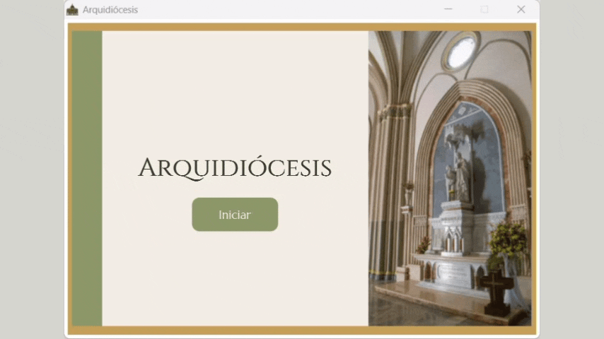
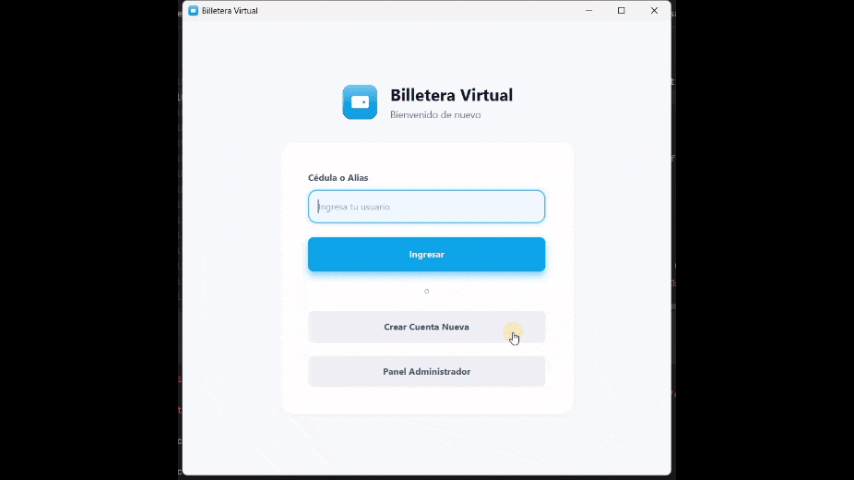
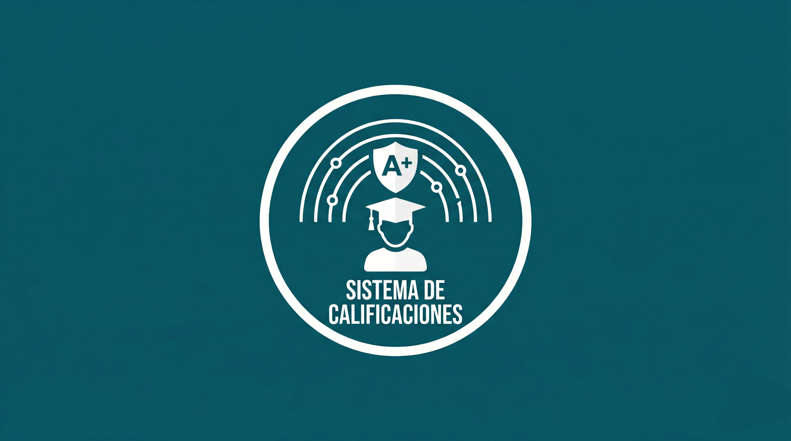

Totocalcio Mondiale
Aplicación en italiano tipo trivia diseñada para el International Day en la UEES. El software sigue el formato del Totocalcio, un historico concurso de apuestas deportivas de fútbol en Italia.
Ver Repositorio en GitHub
Todos mis proyectos
y contribuciones.
Aplicación en italiano tipo trivia diseñada para el International Day en la UEES. El software sigue el formato del Totocalcio, un historico concurso de apuestas deportivas de fútbol en Italia.
Ver Repositorio en GitHub
Proyecto de Base de datos II donde se desarolló un Data Warehouse y una aplicación que permite observar distintas métricas con los datos simulados de la empresa otorgada.
Ver Repositorio en GitHub
Proyecto de Estructura de Datos donde se desarolló una agenda de contactos para aplicar las estructuras aprendidas en clase, tales como Arbol Atrie y Heap.
Ver Repositorio en GitHub
Proyecto de Sistemas Operativos donde aprendí a trabajar con programación concurrente, mediante la organización de multiples vehículos en un estacionamiento.
Ver Repositorio en GitHub
Proyecto de Base de Datos I donde aprendí a trabajar con las bases de datos a través del tema propuesto, explorando las bases relacionales, las tablas, relaciones, SQL, generación de reportes y la conexión entre aplicación y base de datos.
Ver Repositorio en GitHub
Proyecto de Programación Orientada a Objetos donde aplique todo lo aprendido de la materia para desarrollar una aplicación del tema, explorando buenas prácticas de programador como SOLID y empleando el diagrama de clases UML.
Ver Repositorio en GitHub
Proyecto de Estructura de datos donde se creo un Sistema de Calificaciones capaz de manejar distintos calculos.
Ver Repositorio en GitHub{kind=link}
{kind=link}